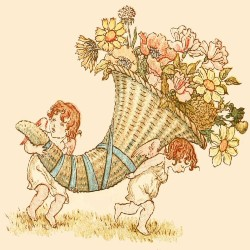

Go, lovely Rose!
Tell her that wastes her time on me,
That now she knows,
When I resemble her to thee,
How sweet and fair she seems to be.
Tell her that's young.
And shuns to have her graces spied,
That hadst thou sprung
In deserts where no men abide,
Thou must have uncommended died.
Small is the worth
Of beauty from the light retired;
Bid her come forth,
Suffer herself to be desired,
And not blush so to be admired.
Then die, that she
The common fate of all things rare
May read in thee;
How small a part of time they share
That are so wondrous sweet and fair,
Yet, though thou fade,
From thy dead leaves let fragrance rise
And teach the maid
That goodness Time's rude hand defies;
That virtue lives when beauty dies.
Waller.
DAFFODILS
I wandered lonely as a cloud
That floats on high o'er vales and hills,
When all at once I saw a crowd,
A host of golden Daffodils;
Beside the lake, beneath the trees,
Fluttering and dancing in the breeze.
Continuous as the stars that shine
And twinkle in the milky way,
They stretched in never-ending line
Along the margin of a bay:
Ten thousand saw I at a glance,
Tossing their heads in sprightly dance.
The waves beside them danced; but they
Outdid the sparkling waves in glee;
A poet could not but be gay,
In such a jocund company;
I gazed and gazed, but little thought
What wealth the show to me had brought!
For oft when on my couch I lie,
In vacant or in pensive mood,
They flash upon that inward eye
Which is the bliss of solitude;
And then my heart with pleasure fills,
And dances with the Daffodils.
Wordsworth.

Cornucopia
There is a garden in her face,
Where roses and white lilies grow;
A heavenly paradise is that place.
Wherein all pleasant fruits do grow;
There cherries grow that none may buy
Till cherry ripe themselves do cry.
Those cherries fairly do enclose
Of orient pearl a double row,
Which, when her lovely laughter shows,
They look like rosebuds fill'd with snow;
Yet them no peer nor prince may buy
Till cherry ripe themselves do cry.
Her eyes like angels watch them still,
Her brows like bended bows do stand,
Threatening with piercing frowns to kill
All that approach with eye or hand
These sacred cherries to come nigh.
Till cherry ripe themselves do cry.
Richard Allison.
ARRANGEMENT OF A BOUQUET
Here damask Roses, white and red,
Out of my lap first take I,
Which still shall run along the thread,
My chiefest flower this make I.
Amongst these Roses in a row,
Next place I Pinks in plenty,
These double Pansies then for show;
And will not this be dainty
The pretty Pansy then I'll tie,
Like stones some chain inchasing;
And next to them, their near ally,
The purple Violet placing.
The curious choice clove July flower,
Whose kind hight the Carnation,
For sweetnest of most sovereign power,
Shall help my wreath to fashion;
Whose sundry colours of one kind,
First from one root derived,
Them in their several suits I'll bind:
My garland so contrived.
A course of Cowslips then I'll stick,
And here and there (though sparely)
The pleasant Primrose down I'll prick.
Like pearls that will show rarely;
Then with these Marigolds I'll make
My garland somewhat swelling,
These Honeysuckles then I'll take,
Whose sweets shall help their smelling.
The Lily and the Fleur-de-lis.
For colour much contending;
For that I them do only prize,
They are but poor in scenting.
The Daffodil most dainty is,
To match with these in meetness;
The Columbine compared to this,
All much alike for sweetness.
These in their natures only are
Fit to emboss the border.
Therefore I'll take especial care
To place them in their order:
Sweet-williams, Campions, Sops-in-wine,
One by another neatly;
Thus have I made this wreath of mine,
And finished it featly.
Nicholas Drayton.